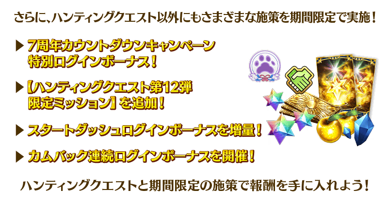
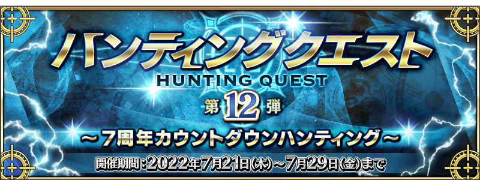
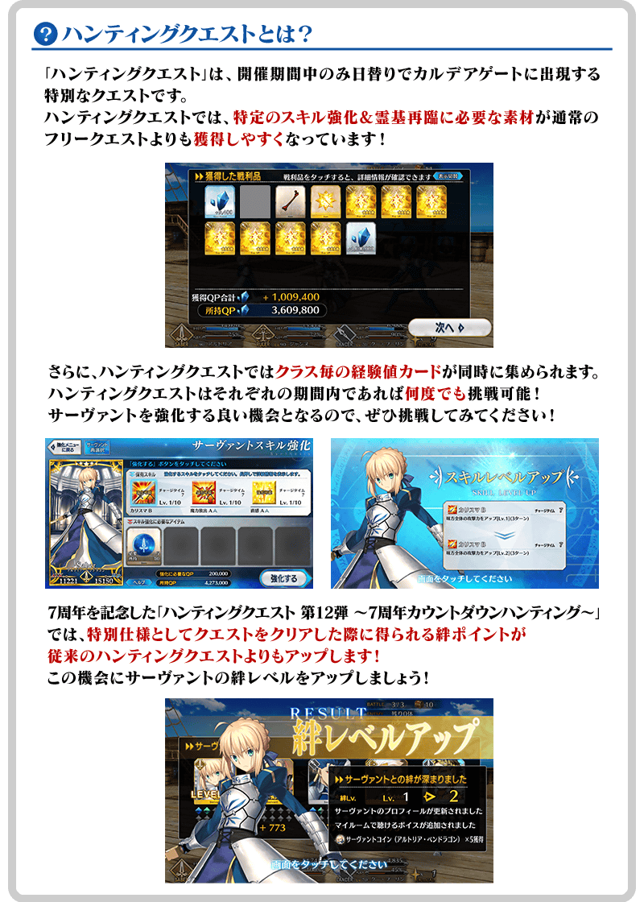
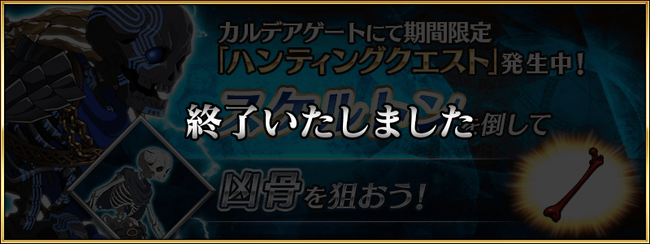
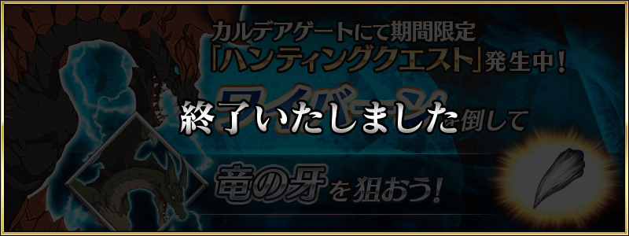
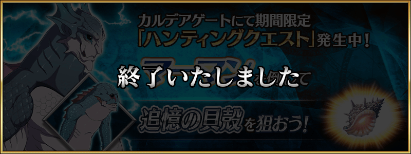
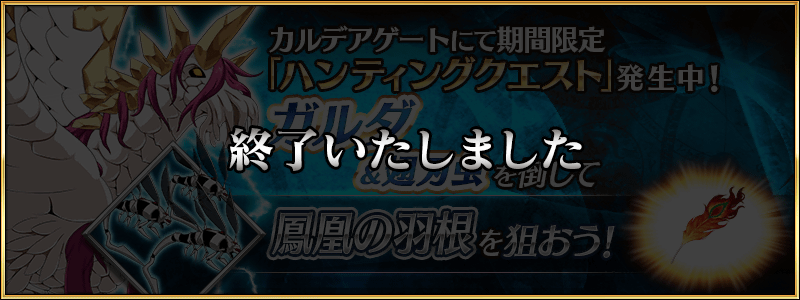
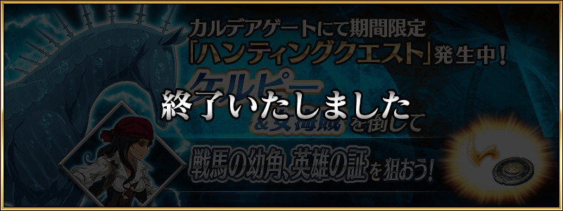
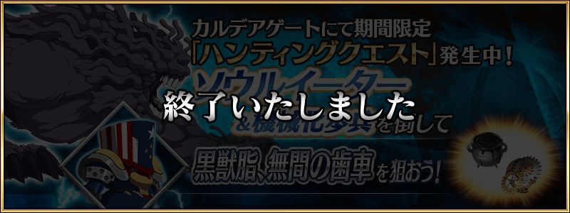

舉辦「7周年倒數宣傳活動」！
本次做為即將到來的「Fate/Grand Order」邁向7周年的倒數措施，實施「狩獵關卡 第12彈 ～7周年倒數狩獵～」！
舉辦期間中，特定敵人做為對象的狩獵關卡會以每日交替在迦勒底之門出現。
在關卡，有準備包含最上位關卡「典位+級」共4階段難易度，在各自的期間內皆能無數次挑戰。
另外，在初次通過時可獲得魔力稜鏡做為關卡通過報酬。
挑戰關卡以獲得技能強化＆靈基再臨素材做為目標吧！
※本頁面皆為開發中圖片。會有與實際圖片相異的情況。

◆舉辦期間◆
2022年7月21日(四) 17:00～7月29日(五) 11:59
◆參加條件◆
所有的御主對象
※新御主玩家必須推進至通過「特異點F 炎上汙染都市 冬木 第3節」。
◆關於舉辦期間中的支援編制◆
「狩獵關卡」中，是將設定成「活動關卡」編制的支援編制向其他御主顯示。狩獵關卡舉辦期間中，請務必重新編制支援的「活動關卡」編制再挑戰活動！

【狩獵關卡】
■「狩獵關卡 第12彈 ～7周年倒數狩獵～」
【各種措施】
■7周年倒數宣傳活動特別登入獎勵！
■以期間限定在御主任務【狩獵關卡 第12彈 ～7周年倒數狩獵～】追加限定任務！
■起跑衝刺登入獎勵以期間限定增量！
■期間限定的回歸連續登入獎勵！

「狩獵關卡 第12彈 ～7周年倒數狩獵～」中，在通過關卡時得到的絆點數會比以往的狩獵關卡更加提升！ 為了記念7周年，本次的狩獵關卡會是特別樣式，藉此機會提升從者的絆等級吧！

7月21日(四) 17:00～7月22日(五) 16:59

7月22日(五) 17:00～7月23日(六) 16:59

7月23日(六) 17:00～7月24日(日) 16:59

7月24日(日) 17:00～7月25日(一) 16:59

7月25日(一) 17:00～7月26日(二) 16:59

7月26日(二) 17:00～7月27日(三) 16:59

7月27日(三) 17:00～7月29日(五) 11:59

為了記念「Fate/Grand Order」的7周年，實施特別登入獎勵。
在下述的期間中登入7次(1天算1次)的話，贈送最多呼符2張、黃金果實5個！
◆舉辦期間◆
2022年7月22日(五) 3:00～7月29日(五) 2:59
※舉辦期間內合計7天內登入的話，可領取所有的登入獎勵。
◆贈送對象◆
2022年7月28日(四) 2:59前通過「特異點F 炎上汙染都市 冬木」的御主對象
※上述時間前，在管理室(ターミナル)畫面的關卡橫幅必須要有「CLEAR」的文字顯示。
◆登入獎勵內容◆
| 登入次數 | 贈送內容 | |
|---|---|---|
| 第1次 |

|
黃金果實 1個 |
| 第2次 |
|
黃金果實 1個 |
| 第3次 |
|
黃金果實 1個 |
| 第4次 |

|
呼符 1張 |
| 第5次 |
|
黃金果實 1個 |
| 第6次 |
|
黃金果實 1個 |
| 第7次 |
|
呼符 1張 |
※登入獎勵會在每天3:00配發。 ※合計7天內能領取，但根據成為贈送對象的時間點，可能無法到此上限。


下述的期間中，在「御主任務」的「限定」標籤內以期間限定追加「【狩獵關卡 第12彈 ～7周年倒數狩獵～】限定任務」。
通過所有任務的話，可得到獸之足跡7個！
◆舉辦期間◆
2022年7月21日(四) 17:00～7月29日(五) 11:59
◆領取期間◆
2022年7月21日(四) 17:00～8月5日(五) 11:59
◆追加任務◆
| 任務開放時間 | 任務名稱 | 任務達成報酬 | |
|---|---|---|---|
| 2022年7月21日(四) 17:00 | 通過1次在7/21(四) 17:00～7/22(五) 16:59出現的任意狩獵關卡 |

|
獸之足跡 1個 |
| 2022年7月22日(五) 17:00 | 通過1次在7/22(五) 17:00～7/23(六) 16:59出現的任意狩獵關卡 |
|
獸之足跡 1個 |
| 2022年7月23日(六) 17:00 | 通過1次在7/23(六) 17:00～7/24(日) 16:59出現的任意狩獵關卡 |
|
獸之足跡 1個 |
| 2022年7月24日(日) 17:00 | 通過1次在7/24(日) 17:00～7/25(一) 16:59出現的任意狩獵關卡 |
|
獸之足跡 1個 |
| 2022年7月25日(一) 17:00 | 通過1次在7/25(一) 17:00～7/26(二) 16:59出現的任意狩獵關卡 |
|
獸之足跡 1個 |
| 2022年7月26日(二) 17:00 | 通過1次在7/26(二) 17:00～7/27(三) 16:59出現的任意狩獵關卡 |
|
獸之足跡 1個 |
| 2022年7月27日(三) 17:00 | 通過1次在7/27(三) 17:00～7/29(五) 11:59出現的任意狩獵關卡 |
|
獸之足跡 1個 |
※請注意舉辦期間與領取期間有所差異。 ※請注意與每週日23:00更新的普通任務(Weekly)不同欄位，超過領取期間的話無法入手報酬。 ※就算達成「【狩獵關卡 第12彈 ～7周年倒數狩獵～】限定任務」，也不會計算在普通任務(Weekly)的任務進行度。 ※請注意「【狩獵關卡 第12彈 ～7周年倒數狩獵～】限定任務」超過任務期限就無法達成。
自2022年7月21日(四) 17:00，在起跑衝刺宣傳活動的登入獎勵，以期間限定追加特別獎勵！
下述期間中，第7天的獎勵變成2倍，增量到聖晶石召喚最多44次份的聖晶石60個與呼符20張、友情點數4,000pt、200萬QP、睿智的猛火ALL★4(SR)40張、黃金果實20個。
※聖晶石召喚最多44次份限在同一個聖晶石召喚進行的情況。
◆舉辦期間◆
2022年7月21日(四) 17:00～8月31日(三) 2:59
【起跑衝刺登入獎勵合計】
・聖晶石225個與呼符45張(聖晶石召喚最多132次份)
※聖晶石召喚最多132次份限在同一個聖晶石召喚進行的情況。
・黃金果實 42個
・睿智的猛火ALL★4(SR) 300張
・420萬QP
・友情點數 30,000pt
◆起跑衝刺登入獎勵的內容◆
| 總登入天數 | 入手登入獎勵 |
|---|---|
| 第1天 |
聖晶石 2個 呼符 5張 友情點數 2,000pt 10萬QP 睿智的猛火ALL★4(SR) 20張 黃金果實 1個 |
| 第2天 |
聖晶石 3個 呼符 5張 友情點數 2,000pt 10萬QP 睿智的猛火ALL★4(SR) 20張 黃金果實 1個 |
| 第3天 |
聖晶石 5個 呼符 5張 友情點數 2,000pt 10萬QP 睿智的猛火ALL★4(SR) 20張 黃金果實 1個 |
| 第4天 |
聖晶石 7個 友情點數 2,000pt 10萬QP 睿智的猛火ALL★4(SR) 20張 黃金果實 1個 |
| 第5天 |
聖晶石 10個 友情點數 2,000pt 10萬QP 睿智的猛火ALL★4(SR) 20張 黃金果實 1個 |
| 第6天 |
聖晶石 15個 友情點數 2,000pt 10萬QP 睿智的猛火ALL★4(SR) 20張 黃金果實 1個 |
| 第7天 |
【期間限定増量】 聖晶石 60個 呼符 20張 友情點數 4,000pt 200萬QP 睿智的猛火ALL★4(SR) 40張 黃金果實 20個 |
| 第8天 |
聖晶石 5個 友情點數 2,000pt 10萬QP 睿智的猛火ALL★4(SR) 20張 黃金果實 1個 |
| 第9天 |
聖晶石 7個 友情點數 2,000pt 10萬QP 睿智的猛火ALL★4(SR) 20張 黃金果實 1個 |
| 第10天 |
聖晶石 9個 友情點數 2,000pt 10萬QP 睿智的猛火ALL★4(SR) 20張 黃金果實 1個 |
| 第11天 |
聖晶石 12個 友情點數 2,000pt 10萬QP 睿智的猛火ALL★4(SR) 20張 黃金果實 1個 |
| 第12天 |
聖晶石 15個 友情點數 2,000pt 10萬QP 睿智的猛火ALL★4(SR) 20張 黃金果實 1個 |
| 第13天 |
聖晶石 25個 友情點數 2,000pt 10萬QP 睿智的猛火ALL★4(SR) 20張 黃金果實 1個 |
| 第14天 |
聖晶石 50個 呼符 10張 友情點數 2,000pt 100萬QP 睿智的猛火ALL★4(SR) 20張 黃金果實 10個 |
※登入獎勵會在每天3:00配。 ※表格中的紅字為期間限定的特別獎勵。 ※在舉辦期間內未進行第7天登入的情況，無法領取2倍的獎勵。
對一定期間未登入的御主對象，以期間限定舉辦「回歸登入獎勵」。
在下述期間中，7天內連續登入的話，贈送聖晶石30個(聖晶石召喚最多11次份)與對從者的培育有用的各種道具！
※(聖晶石召喚最多11次份)限在同一個聖晶石召喚進行的情況。
◆舉辦期間◆
2022年7月21日(四) 17:00～8月31日(三) 2:59
※期間內未登入的話無法領取。
◆贈送對象◆
滿足以下所有條件的御主對象
・2022年6月23日(四) 23:00～7月21日(四) 16:59的期間未進行登入
・2022年8月30日(二) 2:59前通過「特異點F 炎上汙染都市 冬木」
※上述時間前，在管理室(ターミナル)畫面的關卡橫幅必須要有「CLEAR」的文字顯示。
【回歸連續登入獎勵合計】 ・聖晶石 30個(聖晶石召喚最多11次份) ・友情點數 合計14,000pt(友情點數召喚70次份) ・睿智的猛火ALL★4(SR) 16張 ・黃金果實 16個
◆回歸連續登入獎勵的內容◆
| 連續登入天數 | 贈送內容 |
|---|---|
| 第1天 |
聖晶石 1個 友情點數 2,000pt 睿智的猛火ALL★4(SR) 1張 黃金果實 1個 |
| 第2天 |
聖晶石 1個 友情點數 2,000pt 睿智的猛火ALL★4(SR) 1張 黃金果實 1個 |
| 第3天 |
聖晶石 2個 友情點數 2,000pt 睿智的猛火ALL★4(SR) 1張 黃金果實 1個 |
| 第4天 |
聖晶石 3個 友情點數 2,000pt 睿智的猛火ALL★4(SR) 1張 黃金果實 1個 |
| 第5天 |
聖晶石 5個 友情點數 2,000pt 睿智的猛火ALL★4(SR) 1張 黃金果實 1個 |
| 第6天 |
聖晶石 8個 友情點數 2,000pt 睿智的猛火ALL★4(SR) 1張 黃金果實 1個 |
| 第7天 |
聖晶石 10個 友情點數 2,000pt 睿智的猛火ALL★4(SR) 10張 黃金果實 10個 |
※第1天的回歸登入獎勵自2022年7月21日(四) 17:00以後配發。 ※之後的的回歸登入獎勵會在每天3:00配發。 ※連續登入天數中斷後，無法領取之後的禮物。 ※最多能領取7次，但根據開始遊戲的時間點，可能無法到此上限。
其他還有，「7周年倒數Pick Up召喚」以期間限定同時舉辦！
關於詳情，請自下述橫幅確認。
■「7周年倒數Pick Up召喚」詳細情報